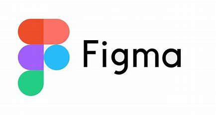

een dag op school
leermiddelen en lestijden
de leermiddelen die wij gebruiken zijn figma, noordhoff, life long learning, studiemeter, mijntoegang.org, vsc(visual studio code) en generation 24/7 student. een aantal van deze leermiddelen kan je bestellen via mbo webshop. in Figma kan je een ontwerp maken van bijvoorbeeld over deze ouderavond.  Noordhoof kan je nederlands oefenen, je kan daar digitaal toetsen en oefen opdrachten maken. de leeraar of lerares kan dan bijvoorbeeld zien hoe ver je bent met jouw nederlands. Life long learning kan je engels leren daarin kunnen de docenten ook inzien hoe ver je bent in engels. mijntoegang.org is het vak slb (studie loopbaan begeleiding). hierin moet je een beetje uitleggen wie bent en wat je vanzelf/ anderen vindt. Generation 24/7 student kijk je naar economie en dit is voor het vak burgerschap. studiemeter gebruiken wij meerendeels voor het vak rekenen, maar je kon het ook gebruiken om oefentoetsen van nederlands en engels daarin te zetten. de lestijden zijn van 8:30 tot 17:00. dit is de tijd dat je bereikbaar moet zijn voor school.